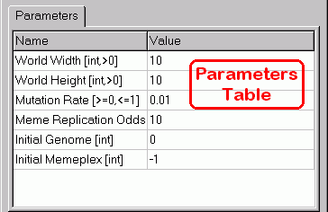
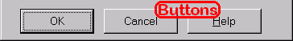

Buttons


Parameters Table
The Parameters table allows the user to modify the model parameters as described in the model's documentation.To edit a parameter value click on the Value column beside the name of the desired parameter and enter a new value. Each parameter must be a real number--further constraints are indicated by square brackets [...] in the parameter Name column. See the model documentation for the meaning of the constraints. If an entered value is invalid a warning will sound and the entry will return to its prior value.

Buttons
- OK Button
- Initializes a new simulation using the specified parameter values.
- Cancel Button
- Closes the dialog without modifying the current simulation.
- Help Button
- Attempts to display this help file.